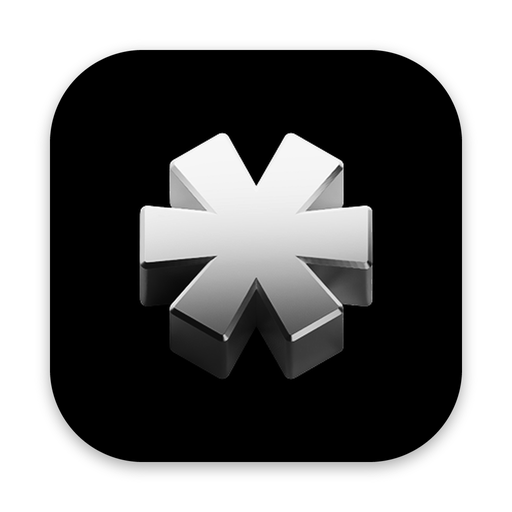
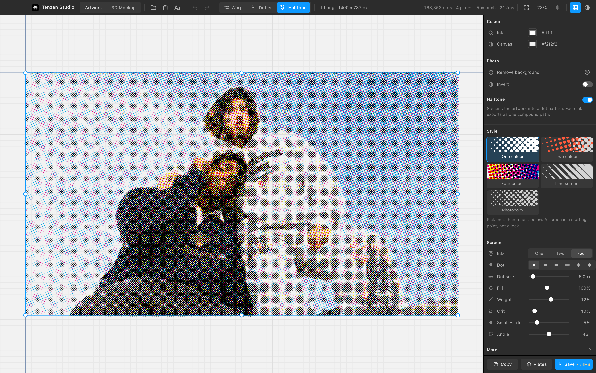
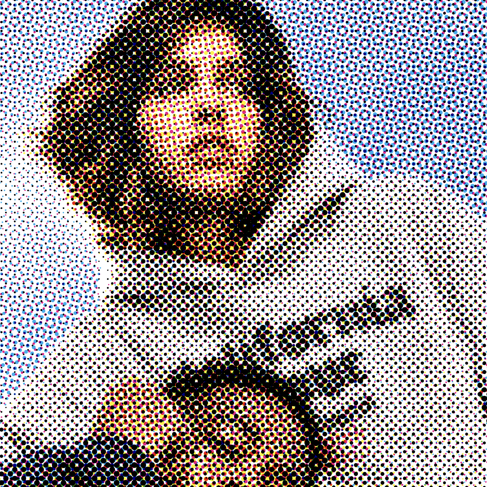
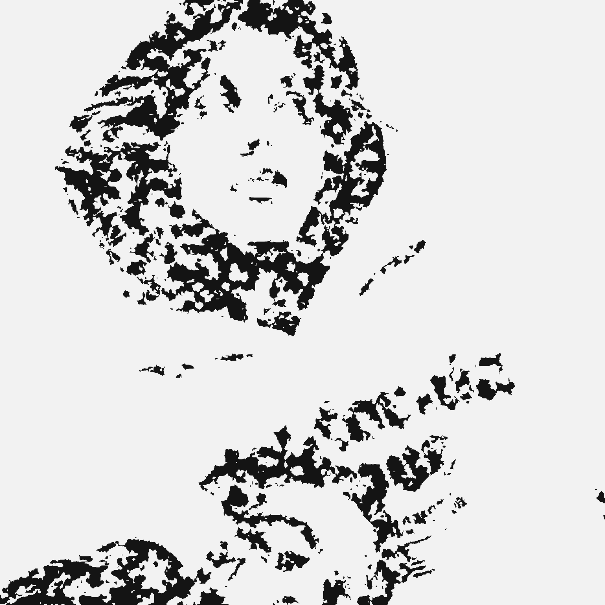
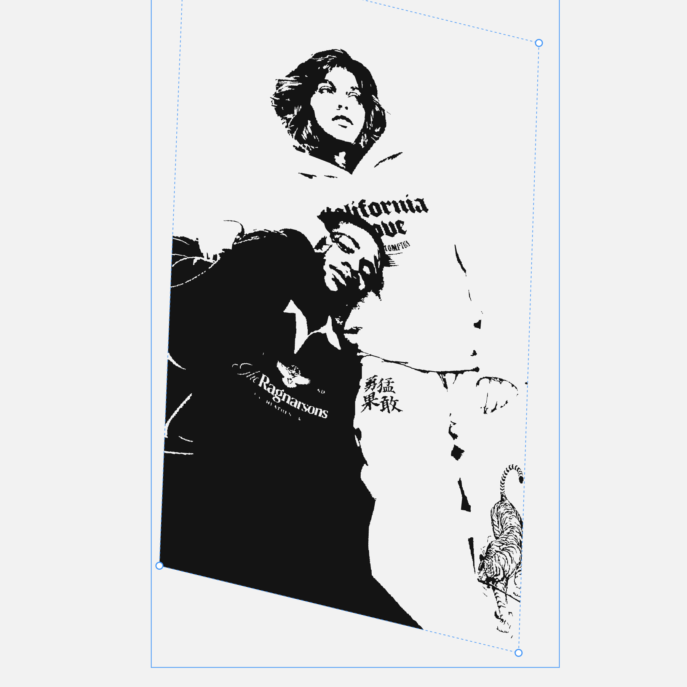
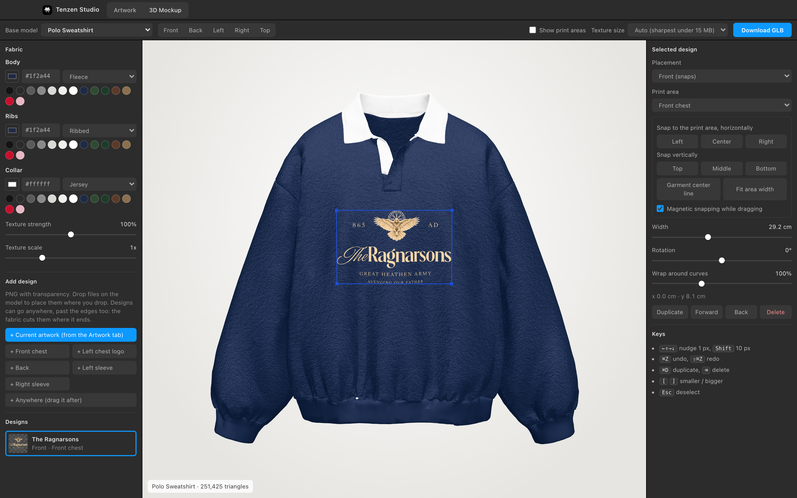
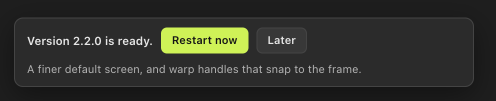

Print effects and 3D mockups for garment artwork.
Halftone a photo into a real CMYK dot screen. Chew a logo up with ink erosion and grunge. Bend artwork onto a garment. Export SVG your printer can actually use, then put it on a 3D garment and save a GLB for your store.

Three effects, independent of each other, none of them applied until you switch one on.




3D Mockup. Pick a garment, choose its colour and fabric, put designs anywhere on it, from the chest to the hood or the brim, and save one Draco-compressed GLB under Shopify's 15MB limit.
You do not need to know anything about code. It takes about a minute, and step three only happens once.
Tenzen Studio for Mac. It is about 150MB, so give it a moment.
Open the file you downloaded, then drag the app icon onto the Applications folder shown next to it. That is the whole install.
The app is not signed by Apple, because that costs $99 a year and this is free. So macOS asks once:
That is it, forever. Every launch after that is a normal double-click.
Every time you open it, the app asks GitHub whether there is anything newer. If there is, it fetches it in the background and puts a small note in the corner of the canvas. Nothing interrupts you, and nothing changes until you say so.

The whole thing is open source under MIT. Run it from source, or build your own copy.
git clone https://github.com/aditya31Sharma/apparel-designer.git cd apparel-designer npm install npm start
The README goes through how the halftone screen, the background removal and the rendering actually work.